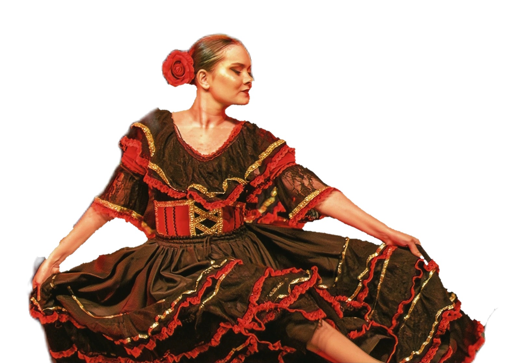

DIFFERENT
PEOPLE.
SAME HUMANITY.
About
A Brazilian-Uruguayan actress drawn to complex characters, meaningful stories and new perspectives.
Bio
Bibiana Riet is a Brazilian–Uruguayan actress. She is drawn to character-driven drama, especially roles about women who keep fighting while wrestling with doubts they rarely let others see. She is completing a degree in psychology at the Federal University of Paraíba (UFPB), and her studies inform a question she brings to each role: What makes a character’s choices make sense to her, even when they surprise everyone else?
Bibiana’s stage experience spans drama, comedy, and movement-based performance. She is developing her work on camera.
View resume →ARTISTIC APPROACH
Characters who live
in the in-between.
What I love most about acting is getting to see the world through someone else’s eyes.
I’m drawn to characters with complicated inner lives, especially women who’ve had to find their strength along the way. I love working out what keeps them fighting, what makes them doubt themselves, and what they do when the choices in front of them ask more of them than they thought they had.
Following a character through something difficult can change how I see what I’m going through in my own life. Living with fibromyalgia, I feel that connection especially strongly when I recognize some of my own frustration in a character. Sometimes their story helps me imagine a different way to face something. Sometimes I just come away with a little more hope.
That’s also why I love writing. I get to start with a person, put them in a situation they don’t know how to handle, and see what they do. Fantasy and romance are the genres I come back to most, and I love finding that same emotional complexity in stories across genres.
MOVEMENT & PRESENCE
Movement as a
language
Dance and physical performance are part of my artistic vocabulary, offering another way to explore character, emotion and storytelling.
BALLET · CONTEMPORARY · PHYSICAL PERFORMANCE
Watch movement reel →
Offstage
I love getting lost in fantasy books, especially when there’s a good romance. A few series I love are The Empyrean, Blood and Ash and A Court of Thorns and Roses.
I’m a huge One Piece fan, and some of my favorite shows are Supernatural, Brooklyn Nine-Nine and Game of Thrones.